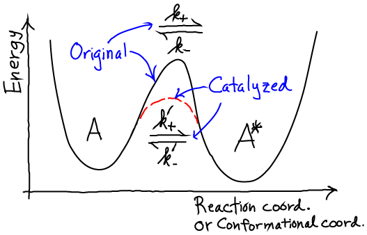
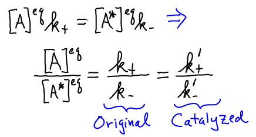

$
\newcommand{\avg}[1]{\langle #1 \rangle}
\newcommand{\conc}[1]{[\mathrm{#1}]}
\newcommand{\conceq}[1]{[\mathrm{#1}]^{\mathrm{eq}}}
\newcommand{\idl}[1]{{#1}^{\mathrm{idl}}}
\newcommand{\kcat}{k_{\mathrm{cat}}}
\newcommand{\kdt}{k_{\mathrm{dt}}}
\newcommand{\kdtsol}{k^{\mathrm{sol}}_{\mathrm{dt}}}
\newcommand{\kkeq}{K^{\mathrm{eq}}}
\newcommand{\kmmon}{\kon^{\mathrm{ES}}}
\newcommand{\kmmoff}{\koff^{\mathrm{ES}}}
\newcommand{\kconf}{k_{\mathrm{conf}}}
\newcommand{\koff}{k_{\mathrm{off}}}
\newcommand{\kon}{k_{\mathrm{on}}}
\newcommand{\ktd}{k_{\mathrm{td}}}
\newcommand{\ktdsol}{k^{\mathrm{sol}}_{\mathrm{td}}}
\newcommand{\rall}{\mathbf{r}^N}
\newcommand{\ss}{\mathrm{SS}}
$
Essentials of Catalysis (Enzyme Action)
Key points
- Catalysis is the acceleration of a molecular process, such as a chemical reaction (i.e., covalent change), isomerization (i.e., conformational change), or a binding process. The catalyst remains unchanged after the process.
- It goes both ways: All molecular processes are reversible, and a given catalyst (e.g., an enzyme) necessarily catalyzes both directions of the reaction equally well, as explained below. This key point is sometimes overlooked.
- In the cell: Very few chemical reactions necessary for cellular activity (e.g., phosophorylation, chemical synthesis) occur spontaneously during the lifetime of a cell.
This necessitates catalysis, but more importantly, provides a means for the cell to regulate its processes.
In essence, reactions only happen when the necessary enzyme is present and active, and the presence/activity of enzymes is tightly regulated through control of protein expression, degradation, and post-translational modifications such as phosphorylation.
Basic Catalysis: Isomerization or Unimolecular Chemical Change

- Isomerization is a conformational change in a small molecule or a macromolecule like protein, RNA, or DNA.
- A unimolecular reaction is one affecting only a single molecule, perhaps by forming or breaking a single covalent bond within the molecule.
- Either situation can be schematized using a simple energy landscape, in which high energy barriers are rarely overcome (i.e., characterized by low rates).
In catalysis, rates increase. Denoting catalyzed rates with primes, we have
\begin{equation}
\label{kcat}
k'_+ > k_+
\hspace{0.5cm} \mbox{and} \hspace{0.5cm}
k'_- > k_- .
\end{equation}
However, catalysis cannot change the equilibrium ratio of the state populations $\conc{A} / \conc{A*}$.
Mathematically,

In words, the catalyzed rates increase together so as to maintain the proper equilibrium - which is unaffected by the presence of a catalyst.
There is a nice way to convince yourself that catalysis cannot change the equilibrium point - it is a worthwhile exercise.
Consider a cycle in which the two states of interest are connected by both a catalyzed and uncatalyzed process.
You can show that, if the ratio of forward and reverse rates does not agree for the two cases, the cycle will spontaneously circulate - violating the second law of thermodynamics and enabling the construction of (imaginary) energy-creating processes.